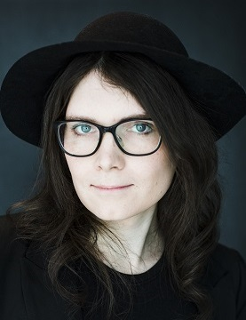

About Leila
PARTICULAR SET OF SKILLS
Systems Design • Progression and Economy Design • Rapid Prototyping • Data-informed Workflow • Team Management • Mathematical Modeling • Player Psychology • Community Building • Narrative Design and Creative Writing
TOOLSETS
Spreadsheet Modeling • C++ • Unreal Engine • Unity • C# • Python • SQL
I’m a game designer with 10 years of experience working across gameplay and engagement systems. I’m especially motivated by projects where player experience is
built through interconnected systems to build an emergent and personal experience for the player.
I’ve taken ownership of complex systems such as progression models, loadouts, social features, and long-term engagement loops. I work closely with other disciplines in implementing and iterating on my designs directly in engine and code. I enjoy interacting with the player communities and iterating based on their experience and feedback.
At heart, I’m a deep thinker who loves to analyze things to figure out how they work.
I enjoy games that offers some kind of different or unique experience as part of the design.
Besides games, I have a great interest in history, and try to take every opportunity to dive into books or historical documentaries to learn more about how the world we live in today came to be.
My other interests include board games, and in particular tabletop roleplaying games, which is where I first got started writing my own modules and encounters.
I also bake, and will bring cookies to the office.
